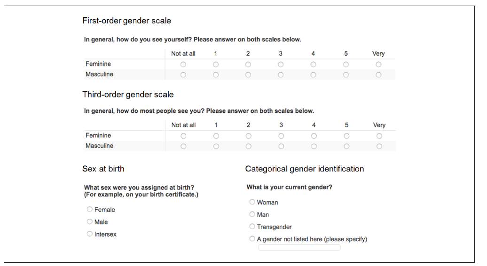

2 Mesurer l’identité: une impossibilité?
Si nous acceptons l’idée qu’il est pertinent pour les économistes d’intégrer dans leurs modèles la variable Identité , alors la question de sa mesure est fondamentale.
L’identité est multiple, dans ce document, nous nous focalisons sur l’identité de genre des individus.
Une des raisons pour lesquelles nous portons notre attention sur cette dimension est que l’identité de genre nous semble être l’une des plus importantes dans la construction individuelle.
Avant même la naissance d’un enfant, la question fondamentale de son sexe biologique est omniprésente: c’est une fille ou un garçon?
L’organisation de la société est centrée autour de cette distinction genrée, les inégalités persistantes entre hommes et femmes justifient également notre intérêt pour cette dimension de l’identité.
Les questionnements sur la non-binarité influencent également notre réflexion, peut-on proposer une mesure de l’identité de genre qui tienne compte d’un continuum entre deux pôles (masculin et féminin), permettant ainsi de mesurer une distance à ces extremum?
Nous verrons donc comment est abordée la mesure de l’identité de genre dans la littérature existante, puis proposerons une mesure continue de cette identité, avec une approche empirique basée sur les pratiques culturelles (genrées) des français.
2.1 L’approche dichotomique: Hommes/Femmes
Lorsque la dimension du genre veut être prise en compte dans les études économiques, bien souvent on se réfère au sexe biologique des individus: homme/femme.
Cette approche binaire est notamment liée à la commodité des données.
En effet, dans les bases de données, cette information figure presque toujours, elle permet d’étudier et de mettre en évidence des différences, souvent des inégalités, entre les deux sexes biologiques.
Cependant, certains individus ne se retrouvent pas dans cette dichotomie, alors la possibilité d’intégrer une troisième option dans les questionnaires est parfois envisagée.
Mais là encore, une approche catégorielle peine à saisir ce qui nous semble fondamental dans une étude empirique de l’identité: la distance aux Prescriptions ou normes.
2.2 Les approches de mesure continue
Afin de prendre en compte la diversité des positions individuelles le long d’un axe Masculin/Féminin, des études ont proposé une approche continue de mesure de l’identité de genre. Nous les distinguons de la façon suivante: certaines études reposent sur un positionnement individuel de l’individu sur une échelle de mesure.
D’autres études proposent la construction d’indices composites pour mesurer la dimension continue du genre.
2.2.1 Des échelles de mesure
Les travaux proposant des mesures continues du genre basées sur des échelles de gradation reposent sur les déclarations individuelles des enquêtés, qui se positionnent le long d’un ou plusieurs axes.
Par exemple, @magliozzi_scaling_2016 propose aux enquêtés de se situer sur plusieurs échelles (comment je me perçois: de très masculin à pas du tout masculin, et de très féminin à pas du tout féminin), mais aussi comment les autres me perçoivent.

En France, l’étude Virage a permis de poser des questions similaires, les résultats de cette étude ont fait l’objet d’un papier rédigé par @trachman_tres_2022.
Il est intéressant de voir qu’en effet, l’identité de genre est faite de nuances, la plupart des individus interrogés ne s’identifient pas aux pôles extrêmes de leur sexe biologique (23,3% des femmes interrogées s’identifient comme très féminines; 30,6% des hommes interrogés s’identifient comme très masculins).
Peu d’individus dévient des normes (1% des femmes interrogées se disent très masculines, 2,3% des hommes interrogés se disent très féminins.)
Ces résultats mettent en lumière la complexité de l’identité de genre, et peut-être confirment la nécessité d’aller au delà du binaire dans les mesures proposées.
Cette approche par gradation a l’avantage de demander directement aux individus le sentiment qu’ils ont d’eux même, et donc de tendre vers la définition même de l’identité.
L’inconvénient repose sur l’accessibilité des données, elle suppose d’intégrer ces questions dans les questionnaires et ces informations sont donc peu disponibles mais liées à des enquêtes bien spécifiques.
Un autre biais est peut-être également que cette approche repose sur la subjectivité des personnes interrogées, elles peuvent être influencées par le biais de la désirabilité sociale (je réponds avec la peur d’être jugé si je réponds mal, je réponds ce qui me semble être conforme aux normes).
Il peut donc être intéressant de combiner ces approches avec d’autres mesures plus indirectes mais, peut-être, moins subjectives.
2.2.2 Les indices composites
Dans la famille des mesures continues de l’identité de genre, certains chercheurs ont construit leurs propres indices de mesures continues.
2.2.2.1 Avec Définitions a priori des dimensions genrées
Parmi les indices composites, un outil très utilisé est le Bem Sex Role Inventory (@bem_measurement_1974).
Il s’agit de créer un indice composite à partir de réponses des enquêtés qui se classent par rapport à différents items.
Ces items sont identifiés au préalable comme plutôt masculin (ex:agressif), plutôt féminin (ex: lunatique) ou neutres (ex: naïf).
Cette approche permet de capturer une distance aux normes, cependant elle suppose de définir au préalable ce qui relève de l’ordre du masculin et du féminin.
Une approche originale récente d’économistes a combiné les 2 approches vues jusqu’ici (échelle de gradation et indice composite), il s’agit des travaux de @brenoe_continuous_2022.
2.2.2.2 Sans Définitions a priori
Une autre approche consiste à construire un indice composite à partir de variables identifiées statistiquement comme genrées, c’est à dire déduire de l’analyse statistique les pratiques ou comportements plus ou moins masculins ou féminins (dans la mesure où ils sont statistiquement significativement différenciés selon les sexes biologiques) et de construire un indice en fonction des poids que représentent chaque variable sur un axe masculin/féminin.
Cette approche est notamment utilisée en médecine (@pelletier_composite_2015.)
Nous avons suivi cette dernière approche pour notre étude, en nous référant notamment aux travaux de @cipriani qui offrent un guide pratique pour la réalisation d’un tel indicateur.